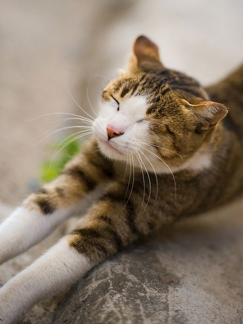

25 november 2014
this is my first article
The cat (Felis catus) is a domestic species of small carnivorous mammal.[1][2] It is the only domesticated species in the family Felidae and is often referred to as the domestic cat to distinguish it from the wild members of the family.[4] A cat can either be a house cat, a farm cat or a feral cat; the latter ranges freely and avoids human contact.[5] Domestic cats are valued by humans for companionship and their ability to hunt rodents. About 60 cat breeds are recognized by various cat registries.[6] The cat is similar in anatomy to the other felid species: it has a strong flexible body, quick reflexes, sharp teeth and retractable claws adapted to killing small prey. Its night vision and sense of smell are well developed. Cat communication includes vocalizations like meowing, purring, trilling, hissing, growling and grunting as well as cat-specific body language. A predator that is most active at dawn and dusk (crepuscular), the cat is a solitary hunter but a social species. It can hear sounds too faint or too high in frequency for human ears, such as those made by mice and other small mammals.[7] It secretes and perceives pheromones.[8] Female domestic cats can have kittens from spring to late autumn, with litter sizes often ranging from two to five kittens.[9] Domestic cats are bred and shown at events as registered pedigreed cats, a hobby known as cat fancy. Failure to control breeding of pet cats by spaying and neutering, as well as abandonment of pets, resulted in large numbers of feral cats worldwide, contributing to the extinction of entire bird, mammal, and reptile species, and evoking population control.[10]
read more